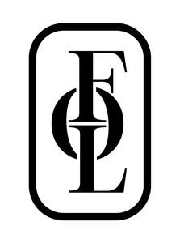

Trade Mark Journal No.2025/014 4 April 2025
UK00004173850 14 March 2025 (6,11,20,21,42)

- Class 6
- Metallic bathroom fittings; metallic bathroom hooks; metallic hooks for towels and/or bath robes; plugs of metal; metallic fittings for furniture, especially handles and hooks; metallic support rails and grips; metallic grab rails; hinged metallic support rails; door handles of metal; brassware for sanitary purposes; parts and fittings for all the aforesaid goods.
- Class 11
- Apparatus for water supply and sanitary purposes; toilets; cisterns; washbasins; sinks; bath tubs; bath panels and screens; showers; shower cubicles; shower enclosures; shower trays; shower panels and screens; shower heads; bidets; hand dryers; heated towel rails; radiators; taps; parts and fittings for all the aforesaid goods.
- Class 20
- Furniture, particularly bathroom furniture; vanity units; washstands; mirrors; storage units; medicine cabinets; stools; non-metallic bathroom fittings; plugs, not of metal; non-metallic bathroom hooks; hooks for towels and/or bath robes; shelves and shelving; non-metallic fittings for furniture, especially handles and hooks; non-metallic support rails and grips; non-metallic grab rails; hinged non-metallic support rails; shower chairs; sanitary furnishings; door handles, not of metal; parts and fittings for all the aforesaid goods.
- Class 21
- Towel rails and rings; laundry baskets; waste bins; toilet brushes; toilet paper holders; dishes, holders and dispensers for soap; dispensers for lotions; holders for toothbrushes, drinking vessels, soap dishes; parts and fittings for all the aforesaid goods.
- Class 42
- Bathroom design services.
Fitzroy of London Limited
Representative: Hargreaves Elsworth